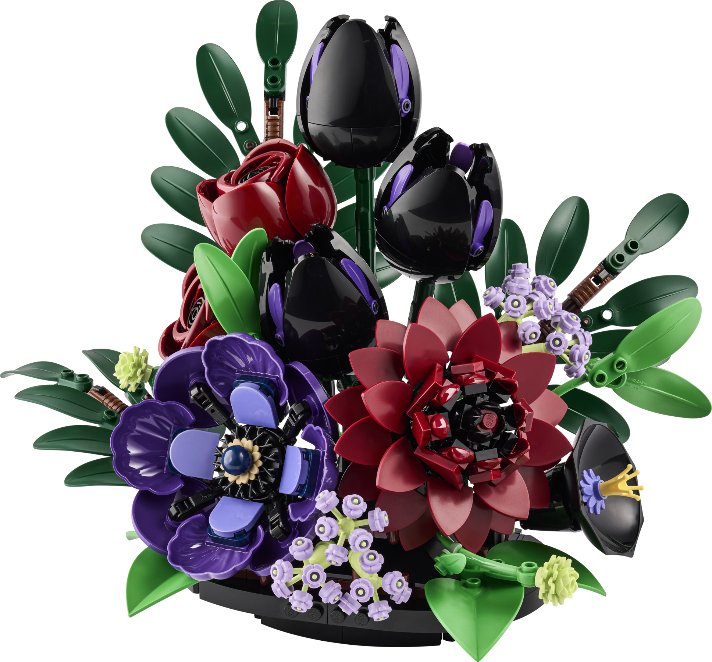

Botanicals
Bring lidt natur ind i hjemmet med
LEGO-blomster og planter.
Her kan du bygge alt fra små blomster
til flotte buketter, der kan pynte på
hylden eller bordet. En hyggelig måde
at kombinere kreativitet med
boligindretning.